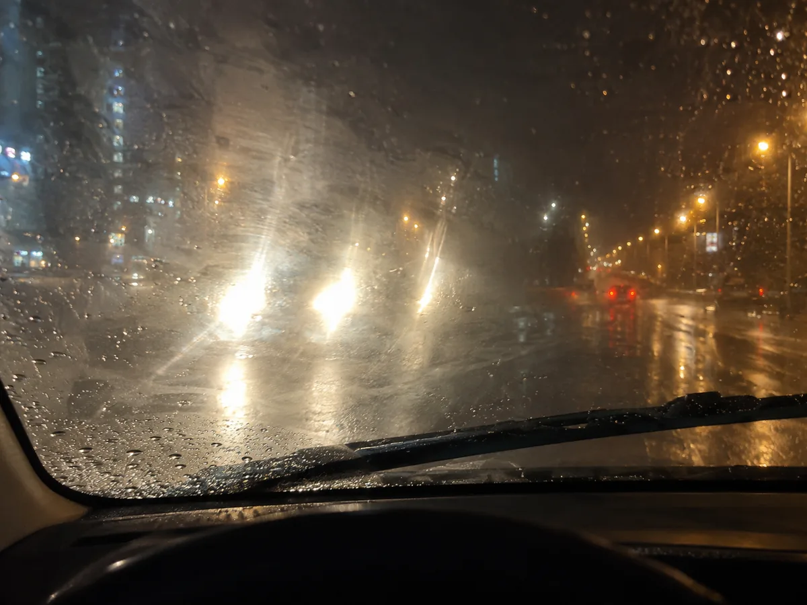
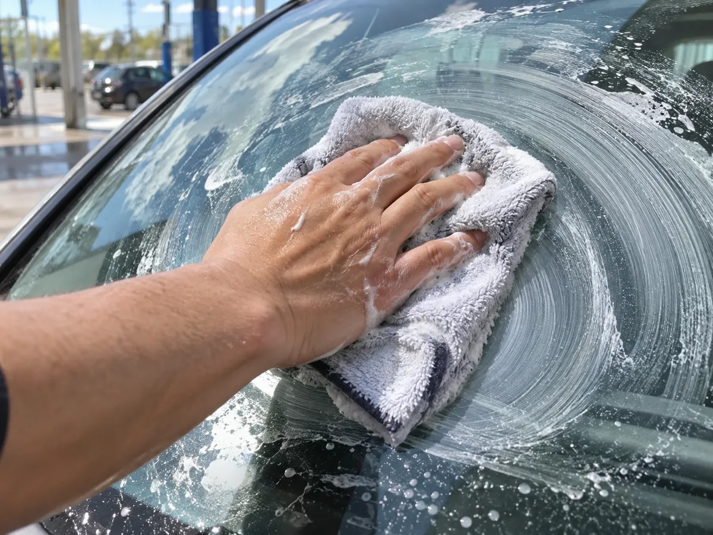
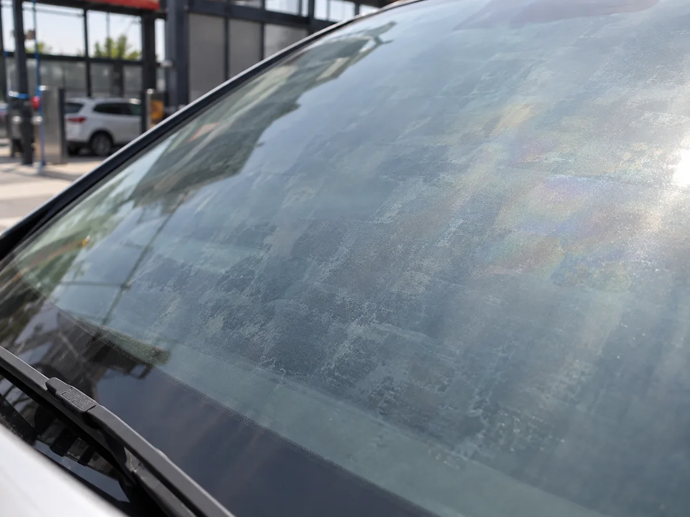
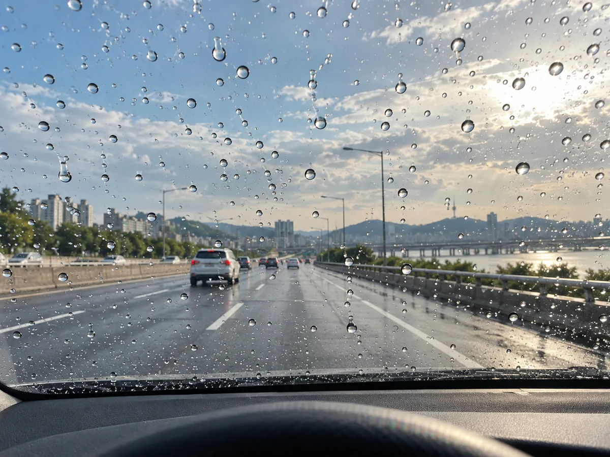

▲ 유막이 낀 앞유리는 비 오는 밤 맞은편 헤드라이트 불빛을 크게 번지게 만들어 시야를 해친다
"와이퍼를 새 걸로 갈았는데도 비 오는 날 밤에는 여전히 앞이 뿌옇게 보입니다." 운전자 커뮤니티에 심심찮게 올라오는 하소연이다. 와이퍼 블레이드를 교체하고, 유리 세정제로 몇 번을 닦아내도 증상이 그대로라면 범인은 와이퍼가 아니라 유리 표면 자체일 가능성이 크다. 바로 유막(油膜)이다. 맑은 날 낮에는 거의 눈에 띄지 않다가, 비가 내리거나 습도가 높은 밤에 마주 오는 차의 헤드라이트를 받으면 유리 전체가 하얗게 번지는 게 특징이다. 단순한 미관 문제가 아니라 돌발 상황 대응 시간을 지연시키는 안전 문제이기도 하다.
1. 유막은 왜 생기나 — 배기가스, 왁스, 그리고 와이퍼 자신

▲ 유막 제거제는 세정형이 아니라 연마형이 많아, 극세사 타월에 묻혀 원형·격자 패턴으로 문질러 막을 벗겨내는 방식으로 작동한다
유막을 이루는 성분은 한 가지가 아니다. 복합적으로 쌓인다.
| 원인 | 설명 |
|---|---|
| 배기가스·매연 | 도로 위 차량 배기가스에 포함된 탄화수소 계열 유분이 유리에 내려앉는다. 정체 구간이나 터널을 자주 지나면 축적 속도가 빨라진다 |
| 세차 시 왁스·코팅제 | 차체용 왁스·코팅제를 바르는 과정에서 제품이 유리에 튀어 묻고, 제대로 헹궈내지 않으면 그대로 막을 형성한다 |
| 워셔액 잔류물 | 세정 성분·계면활성제가 증발한 뒤 유리 표면에 미세하게 남는다 |
| 와이퍼 고무 마모 | 오래되거나 경화된 와이퍼 블레이드가 닦일 때마다 미세한 고무 가루와 오일 성분을 유리 위에 남긴다 — 즉 유막의 원인이 와이퍼 자체인 경우도 많다 |
| 빗물·대기오염 결합 | 오염물질이 섞인 빗물이 유리 위에서 마르면서 유막 형성을 가속한다 |
이 성분들이 뒤섞여 만든 막은 두께가 마이크로미터 단위로 얇아 맨눈으로는 잘 드러나지 않는다. 문제는 빛이 이 막을 만났을 때다. 매끄러워야 할 유리 표면이 미세하게 불균일해지면서 빛이 정면으로 통과하지 못하고 사방으로 산란된다.
2. 와이퍼를 새로 갈아도 안 고쳐지는 이유
많은 운전자가 시야가 흐려지면 가장 먼저 와이퍼부터 의심한다. 틀린 접근은 아니다. 경화된 와이퍼 블레이드는 유리를 고르게 닦지 못해 줄무늬를 남기고, 오히려 유막의 원인이 되기도 한다. 하지만 이미 유리 표면에 유막이 형성된 상태라면, 아무리 성능 좋은 새 와이퍼로 바꿔도 막 자체를 벗겨내지는 못한다. 와이퍼는 물기를 밀어내는 도구일 뿐, 유리 표면에 화학적으로 붙어 있는 기름 성분을 제거하는 도구가 아니기 때문이다. 유리 세정제 스프레이도 마찬가지다. 먼지나 가벼운 오염은 씻어내지만, 고착된 유막까지 지우려면 연마 성분이 들어간 전용 유막 제거제가 필요하다.
이런 증상이면 유막을 의심하라
- 맑은 낮에는 거의 안 보이는데, 비 오는 밤에만 유리 전체가 뿌옇게 번진다
- 와이퍼를 새로 갈아도, 유리 세정제로 닦아도 번짐이 그대로다
- 손으로 유리 표면을 문질렀을 때 매끈하지 않고 미세하게 끈적하거나 뻑뻑한 느낌이 든다
- 세차 직후 유리를 비스듬히 보면 무지개빛 얼룩이 은은하게 비친다
3. 우천·야간 시야, 실제로 얼마나 나빠지나

▲ 세차 후에도 유리를 비스듬히 보면 무지개빛으로 얼룩진 유막 자국이 남아있는 경우가 많다
유막이 시야에 미치는 영향은 낮과 밤, 맑은 날과 비 오는 날에 따라 크게 다르다. 낮 역광에서는 눈부심을 유발해 장거리 운전 시 눈의 피로를 키우는 정도지만, 야간·우천이 겹치면 상황이 급격히 나빠진다. 맞은편 차량의 헤드라이트 빛이 유리 표면의 미세한 요철에 부딪혀 사방으로 퍼지면서, 광원이 하나의 점이 아니라 유리 전체를 뒤덮는 빛무리처럼 보이게 된다. 여기에 빗물까지 더해지면 와이퍼로 닦아도 얼룩이 남고, 산란이 한층 심해진다. 현장에서는 이를 두고 "습기 차거나 비 오는 날에는 빛번짐도 심하고 특히 밤에는 노답 수준"이라고 표현할 정도다. 실제 반사광 산란은 도로 상황 파악을 어렵게 하고, 돌발 상황에 대한 반응 시간을 지연시킬 수 있어 유막 제거는 미관이 아니라 안전 문제로 다뤄야 한다는 지적이 나온다.
4. 제거 순서 — 제거제·클레이바, 그리고 반드시 필요한 헹굼

▲ 유막 제거 후 발수코팅까지 마치면 빗물이 유리에 머물지 않고 방울져 흘러내려 시야 확보에 도움이 된다
유막 제거는 순서를 지키지 않으면 오히려 유리에 미세 스크래치를 남길 수 있다. 이물질이 남은 상태에서 제거제를 문지르면 먼지·모래 알갱이가 연마재처럼 작용해 유리 표면을 긁기 때문이다.
| 단계 | 내용 |
|---|---|
| ① 사전 세척 | 고압수나 일반 세차로 유리 표면의 먼지·모래 등 이물질을 먼저 완전히 씻어낸다 |
| ② 제거제 도포 | 약한 유막은 세정형 제품으로도 되지만, 고착된 유막은 산화세륨 등 연마 성분이 든 제품이 필요하다. 극세사 타월이나 전용 스펀지에 묻혀 원형·격자 패턴으로 꼼꼼히 문지른다 |
| ③ 클레이바(점토바) | 표면에 눌러 붙은 미세 오염물을 물리적으로 떼어내는 보조 도구로, 제거제와 함께 쓰면 효과가 높아진다 |
| ④ 헹굼 | 제거제·컴파운드 잔류물이 남으면 그 자체가 새로운 오염원이 되므로 흐르는 물로 완전히 씻어낸다 |
| ⑤ 발수 코팅 | 유막 제거 과정에서 기존 코팅층도 함께 벗겨지므로, 새로 발수 코팅제를 시공해야 빗물이 방울져 흘러내리는 효과를 볼 수 있다 |
※ 발수 코팅 시공 시 시속 40~50km 이상에서는 빗물이 자연스럽게 떨어져 나가 와이퍼 사용 빈도를 줄이는 효과가 있다.
직접 하기 번거롭다면 전문 업체에 맡기는 방법도 있다. 유막 제거와 발수 코팅을 함께 진행할 경우 비용은 대략 8만~15만 원, 직접 할 경우 제거제(1만~3만 원)와 발수코팅제(6천~2만 원)를 합쳐 2만~5만 원 선이면 준비할 수 있다.
5. 얼마나 자주 해야 하나 — 재발 주기와 예방
유막은 한 번 제거했다고 영구히 사라지지 않는다. 앞서 살펴본 원인들, 즉 배기가스·왁스 잔여물·와이퍼 마모가 계속되는 한 다시 쌓인다. 다만 주행 환경에 따라 재발 속도는 꽤 차이가 난다. 도심·터널을 자주 지나거나 정체가 잦은 환경에서는 2~3개월 안에 다시 유막이 형성되는 경우가 많고, 외곽 위주로 주행하거나 세차를 자주 하는 경우에는 4~6개월 이상 시야가 유지되는 편이다. 예방을 위해 실천할 수 있는 습관은 다음과 같다.
재발 늦추는 습관
- 세차 시 왁스·코팅제가 유리에 튀지 않도록 유리 부위는 마스킹하거나 별도로 닦는다
- 와이퍼 블레이드는 6개월~1년 주기로 점검하고, 경화되거나 갈라졌다면 교체한다
- 워셔액은 정품·희석 비율을 지켜 사용하고, 저가 제품의 과도한 계면활성제 잔류를 피한다
- 유막 제거 후에는 발수 코팅을 함께 시공해 재오염 속도를 늦춘다
정리
체크포인트
- 맑은 날엔 안 보이다가 비 오는 밤에만 앞유리가 뿌옇게 번진다면 와이퍼가 아니라 유막을 의심해야 한다
- 유막은 배기가스 유분, 왁스·코팅제 잔여물, 와이퍼 고무 마모, 워셔액 잔류물이 뒤섞여 형성된다
- 와이퍼 교체나 유리 세정제로는 지워지지 않으며, 연마형 유막 제거제와 헹굼, 발수 코팅까지 마쳐야 효과가 있다
- 방치하면 야간·우천 시 헤드라이트 빛이 유리 전체로 산란돼 반응 시간이 늦어질 수 있는 안전 문제다
- 재발 주기는 도심·터널 위주 주행 시 2~3개월, 외곽 위주 주행 시 4~6개월 이상으로, 주행 환경에 따라 정기적인 관리가 필요하다